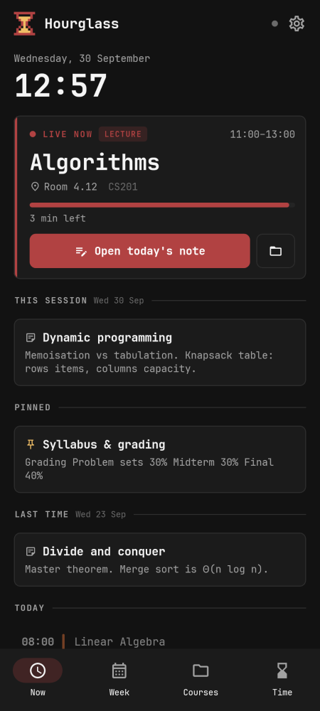
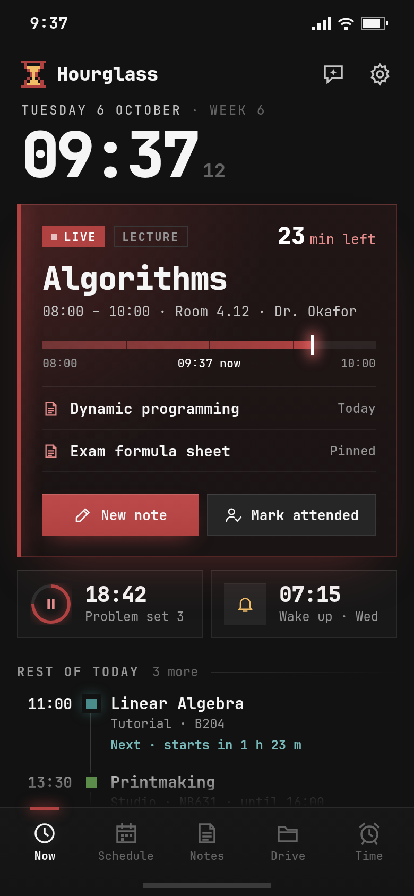

Now · Android 0.3.4 · Paparazzi snapshot

Round 5 · phone · 390 × 844

0.3 spec · PC · Desktop Now
What is better
- The live class is one card with a real progress bar (start, now, end), the minutes left and one-tap Mark attended.
- Notes for this class sit inside that card, with full titles; no 2-line squeezed tiles.
- Running timer (draining ring) and next alarm are side by side, then the rest of today as a timeline with the next class counting down.
- PC adds a whole-day strip with the now line, Coming up (quiz, deadline, inbox) and term attendance against the 75% line.
- Type scale: a confident 60 to 120 px clock, 30 to 44 px class name, 12 px uppercase section labels; strict 4/8 spacing.